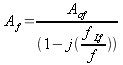
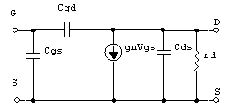

Núcleo Maracay
Dpto. de Ingeniería Electrónica
IX Término, 03-2004
Prof. Isabel Vera
Secciones A y B
Semana 4 Efectos de la retroalimentación negativa sobre el ancho de banda.
La ganancia de un amplificador realimentado viene dada por:
, donde es conocido como factor de desensibilización.
para valores de >>1 tendremos que
pero
aunque
 sea
constante, ya sabemos que “A” no lo es, por lo que
encontraremos algún punto del rango de frecuencias donde
y
no podremos hacer la aproximación de la ganancia :
,
es por ello que debemos estudiar el comportamiento de un circuito
realimentado en el plano frecuencial.
sea
constante, ya sabemos que “A” no lo es, por lo que
encontraremos algún punto del rango de frecuencias donde
y
no podremos hacer la aproximación de la ganancia :
,
es por ello que debemos estudiar el comportamiento de un circuito
realimentado en el plano frecuencial.
Ya sabemos que la ganancia en lazo abierto de un circuito pasabajo con un elemento almacenador de energía (un polo) es:
, a partir de esta ecuación podemos dar la expresión general en lazo cerrado para ese mismo circuito, quedando como sigue:
donde:
y
De manera equivalente, podemos hallar la ganancia de un circuito pasa-alto, con un solo polo y realimentado, quedando como sigue:

donde:
y
Podemos ver, que si , la ganancia en lazo cerrado disminuye y aumenta el ancho de banda.
También se puede apreciar que el producto de la ganancia por el ancho de banda, es un valor constante tanto en lazo abierto como en sistemas realimentados:
De todo lo anterior se concluye que la realimentación negativa mejora el ancho de banda de un amplificador.
Paso de banda de etapas en cascada
Si tenemos “n” etapas acopladas en cascada y tales etapas NO TIENEN ACCIÓN ENTRE SÍ, es decir, la impedancia de entrada de cada etapa es lo suficientemente alta como para no cargar a la etapa precedente, podemos decir que la ganancia total del sistema, será el producto de la ganancia de cada etapa.
Si cada etapa es un circuito pasabajo y tiene un polo dominante y una frecuencia entonces la frecuencia de corte superior total del sistema se obtiene a partir de:
Si entonces se despeja de:

De manera similar en un sistema de circuitos pasa-alto, cada uno con un polo dominante y una frecuencia entonces la frecuencia de corte inferior total del sistema se obtiene a partir de:
igualmente si asumimos que las frecuencias de corte de cada circuito son iguales entre sí, llegamos a la expresión final:
Existen aproximaciones para cuando las frecuencias de corte de cada circuito difieren entre sí, quedando como sigue:
A continuación se muestra el modelo equivalente del FET en alta frecuencia:

Noten que, al compararlo con el modelo a baja frecuencia, apreciamos que se añadieron condensadores entre cada una de las uniones. La impedancia capacitiva introducida por el condensador entre Drenaje(D) y Fuente (S) “Cds” suele considerarse infinita.